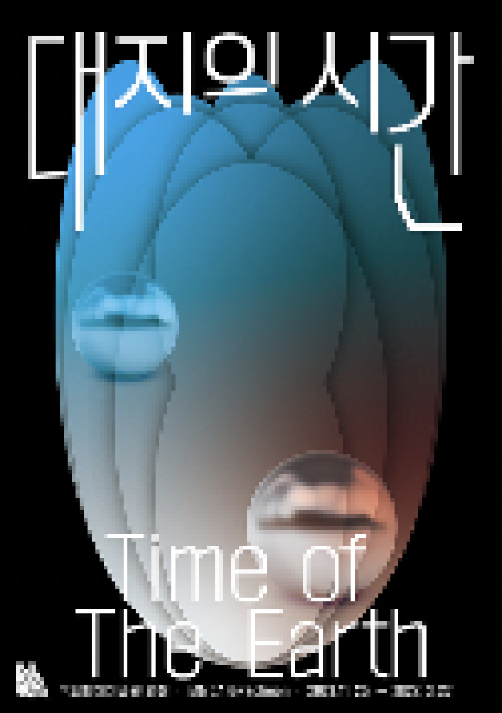

> title
대지의 시간
> content
생명 가치의 사유와 실천으로서 생태미술을 향하여
《대지의 시간》은 기후변화와 팬데믹 등 전 지구적 위기의 시대를 맞이하여 새로운 시대정신으로 떠오르고 있는 '생태학적 세계관'을 탐색하는 장으로서, '공생', '연결', '균형의
회복'을 지향하는 국내외 작가
16명의 작품과 아카이브를 선보인다. 김주리, 나현, 백정기, 서동주, 장민승, 정규동, 정소영 등 한국 작가들의 신작과 올라퍼 엘리아손, 장뤽 밀렌, 주세페 페노네, 크리스티앙 볼탕스키,
히로시 스기모토 등 해외
작가들의 작품이 어우러져 인간과 자연의 관계를 상호 존중과 교감 속에서 파악하고, 균형과 조화를 추구하며 공진화(供進化, co-evolution)하는 열린 공감대를 형성한다.
작품 내용만이 아니라 제작 과정과 전시장 구성에서도 생태학적 가치를 실현하려고 했다. 전시장 가벽을 없애 작품들이 서로 소통하도록 배치했고, 작품 사이사이에는 특수 재질로 제작한
세 가지 크기의 구체를 배치해 작품과
관객, 공간을 비추도록 했다. 이를 통해 전시 리듬을 형성하면서 유동성·가변성·연결성이라는 생태적 가치를 담고자 했다. 한편, 중앙 홀에 자리한 한국 생태미술 아카이브에서는 1970년대 이후
한국 미술계가 대안을
모색하는 과정에서 탄생한 한국 생태미술의 흐름을 일별할 수 있다. 임동식, 김보중, 정재철, 이경호 등 생태미술 작가들의 작품과 다양한 아카이브로 한국 생태미술을 압축적으로 소개한다.
인간중심적 관점을 극복하고 생태학적 사유와 실천을 모색하는 생태미술은 인류의 과거를 돌아보는 일인 동시에 동시대와 미래를 향해 열린 새로운 가능성이다. 《대지의 시간》은 동시대
미술가들의 신작과 대표작을 비롯해 한국
생태미술의 태동과 전개 과정을 보여주는 아카이브로 생태미술의 역사적 가치와 새로운 가능성을 살피며, 이로써 생명체는 물론 존재하는 모든 것의 ‘공동의 집’인 지구의 장대한 역사 속에 인간의
시간을 자리매김한다.
그리하여 인간이 자신을 거대한 생태계의 일원이라고 자각할 때 비로소 뚜렷하게 나타나는 생태적 가치를 성찰하고자 한다.
